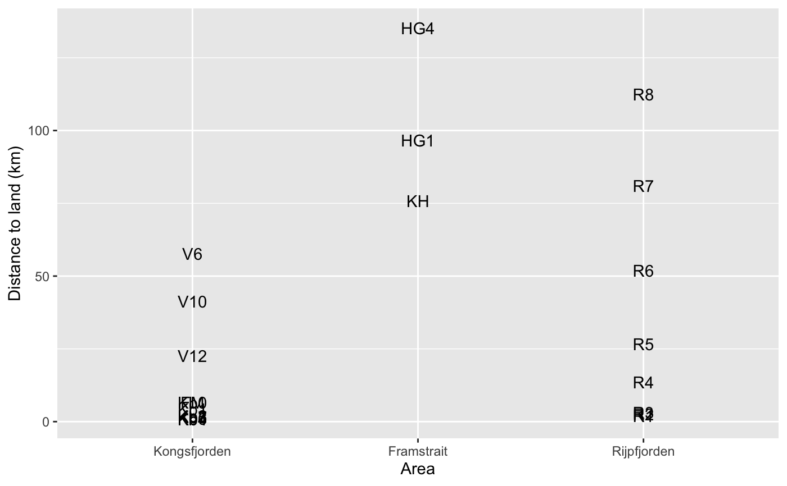
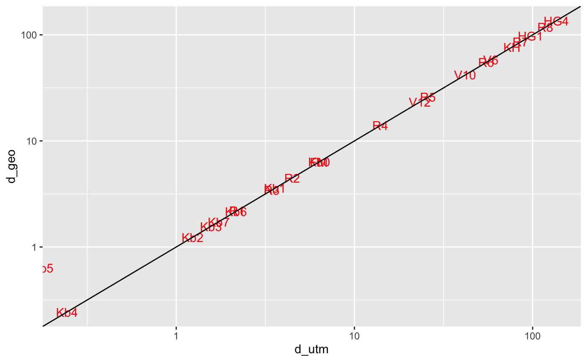

Calculates the closest distance to land within a map type for a given set of coordinates
dist2land(x, lon.col = "longitude", lat.col = "latitude", map.type = "arctic50", bind = TRUE, dist.col = "dist", geodesic_distances = FALSE)
Arguments
| x | Data.frame containing geographic coordinates as decimal degrees |
|---|---|
| lon.col | The name of the longitude column in |
| lat.col | The name of the latitude column in |
| map.type | a character string specifying the map type which land boundaries should be used for the distance calculation. See the |
| bind | Logical indicating whether |
| dist.col | The name of the distance column, if |
| geodesic_distances | Logical indicating whether |
Value
If bind = TRUE, returns a data frame with calculated distances to land. If bind = FALSE returns vector in the same order than coordinates specified in x. Distances are returned as kilometers.
Details
If geodesic_distances = TRUE, the function uses the gDistance function to calculate closest distances between coordinates in x and a specified SpatialPolygonsDataframe object. The spatial object (map) can be specified using the map.type argument. If geodesic_distances = FALSE, the dist2Line is used to calculate similar distances assumming an elliptical Earth. The dist2Line function is presumably more exact, especially for pan-Arctic maps, but considerably slower.
Examples
## Distances from land using UTM coordinates library(ggplot2) data("npi_stations") dists <- dist2land(npi_stations, lon.col = "Lon", lat.col = "Lat", map.type = "svalbard") dists$Area <- ordered(dists$Area, c("Kongsfjorden", "Framstrait", "Rijpfjorden")) ggplot(dists, aes(x = Area, y = dist, label = Station, color = Area)) + geom_text() + ylab("Distance to land (km)")## Geodesic distances are presumably more exact, ## but much slower to calculate. Do not use detailed ## maps for these: d_utm <- dist2land(npi_stations, lon.col = "Lon", lat.col = "Lat", map.type = "barentssea", dist.col = "d_utm") d_geo <- dist2land(npi_stations, lon.col = "Lon", lat.col = "Lat", map.type = "barentssea", geodesic_distances = TRUE, dist.col = "d_geo") y <- merge(d_utm[c("Station", "d_utm")], d_geo[c("Station", "d_geo")]) ggplot(y, aes(x = d_utm, y = d_geo, label = Station)) + geom_text(color = "red") + geom_abline(slope=1, intercept=0) + scale_x_log10() + scale_y_log10()#> Warning: Transformation introduced infinite values in continuous x-axis## The processing difference between geodesic and UTM distances: system.time(dist2land(npi_stations, lon.col = "Lon", lat.col = "Lat", map.type = "barentssea"))#> user system elapsed #> 0.14 0.00 0.14#> user system elapsed #> 0.22 0.01 0.25 system.time(dist2land(npi_stations, lon.col = "Lon", lat.col = "Lat", map.type = "barentssea", geodesic_distances = TRUE))#> user system elapsed #> 27.09 0.25 28.08#> user system elapsed #> 32.04 0.39 32.97 ## Despite the inaccuracy due to polar stereographic protection ## the UTM version seems to produce feasible distances from land ## on pan-Arctic scale data("meiofauna") d_panarctic <- dist2land(meiofauna, lon.col = "Lon", lat.col = "Lat", map.type = "arctic50") d_panarctic <- transform_coord(d_panarctic, lon = "Lon", lat = "Lat", map.type = "arctic50", bind = TRUE) basemap("arctic50") + geom_point(data = d_panarctic, aes(x = lon.utm, y = lat.utm, color = dist), size = 3) + scale_color_gradientn(name = "Distance (km)", colours = colorRamps::matlab.like(7))